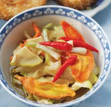

Cùng bắt tay làm thử thôi nào!
Nguyên liệu:
Chuẩn bị:
Đu đủ, su hào: gọt vỏ, bỏ phần ruột, xắt lát dày độ 0,5cm rồi thái miếng nhỏ vừa ăn, rồi ngâm nước muối;
Củ kiệu (hoặc thay bằng củ hành khô): cắt bỏ rễ và lá, rửa sạch; tỏi: bóc vỏ để nguyên củ; ớt: rửa sạch, cắt đôi quả hoặc để nguyên quả, tất cả ngâm vào nước muối pha loãng.
Lọ để đựng dưa món: rửa sạch lau khô, phơi nắng.
Tất cả các loại củ, quả ngâm trong nước muối độ 120 phút, vớt ra rửa lại với nước lã cho hết mặn, vắt ráo ngâm vào nước có pha phèn chua độ 30 phút, vớt ra xả lại nước lạnh độ 2, 3 lần, vắt ráo, trải ra sàng hay mâm phơi nắng đến chiều. Các loại củ quả vừa héo, đem vào, nấu nước sôi trụng sơ, vắt ráo, để nguội. Nước mắm + đường quấy tan để lên bếp nấu sôi tan, nhắc xuống để nguội.
Chế biến:
Để các loại củ quả vào lọ thủy tinh, chế nước mắm đã nguội vào, dùng vỉ tre hay nhựa có đường kính bằng lọ nhấn cho các loại củ quả không trồi lên khỏi mặt nước mắm và nước mắm ngập trên mặt các loại củ quả độ 3cm. Đem phơi nắng, độ hai ngày dùng được.
Gắp ra đĩa để ăn kèm với bánh tét hoặc bánh chưng.
Chúc các bạn thành công với cách làm dưa món trên nhé!